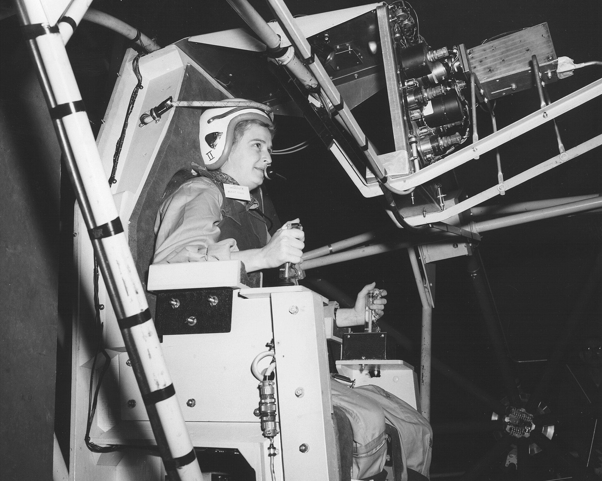

History Project
Breaking
Barriers
How Mercury 13 and Policy Changes Overcame NASA's Institutional Barriers to Launch Sally Ride

Jerrie Cobb, 1960
NASA / Life Magazine
Jerrie Cobb at the MASTIF gimbal rig, NASA Lewis Research Center, April 6, 1960 — one of 75 tests she passed that the Mercury 7 astronauts had taken.
THEME
2025
Innovation in History: Impact, Influence, Change
Central Question
What was the main cause of the big, triumphant moment of Sally Ride in 1983? Was it true cultural change (people becoming less sexist), or was it pressured institutional change?
THESIS
While dominant narratives attribute Sally Ride's historic flight in 1983 to a cultural shift and widespread reduction in sexism, institutions and media reveal that women were already considered physically and technically capable, but blocked by discriminatory, bureaucratic policies.